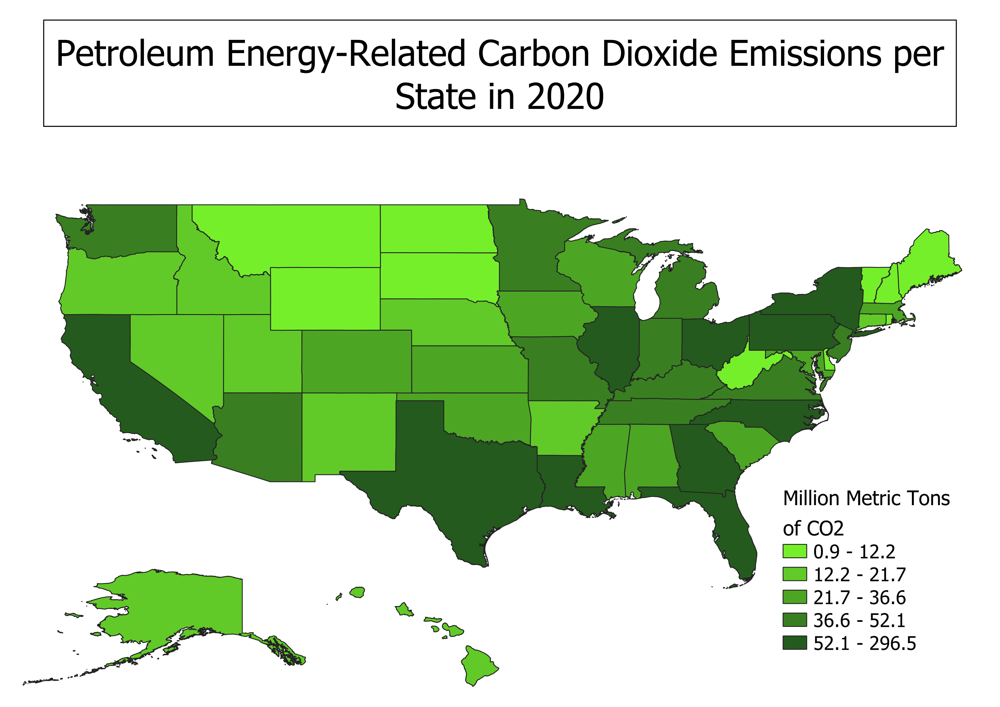

Homework 7: Making a Choropleth
Jane Antonas
Data used for this project:
"Fuel specific emission tables by state" > "Petroleum energy-related carbon dioxide emissions"
geoJSON Vector File:
View Vector on Github
Link to Clean CSV:
Download Clean CSV
Map
Using data from the US Energy Information Administration, the amount petroleum energy-related carbon emissions are displayed by states (in million metric tons). I am interested in the various economic and political factors that contribute to carbon dioxide emissions across the US. In the future, I'd like to cross-reference this data with a map of: 1) number of oil-burning power plants in each states, 2) states that have adopted California's Clean Cars Standards. This choropleth is a good starting point for analyzing how population, policy, and other factors contribute to emissions.
